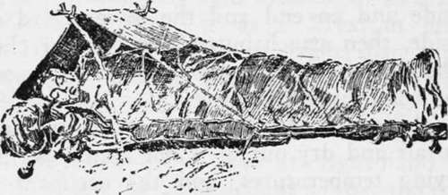

Camp Bedding. Part 2
Description
This section is from the book "Camping And Woodcraft", by Horace Kephart. Also available from Amazon: Camping and Woodcraft.
Camp Bedding. Part 2
Camp blankets should be all-wool. A cotton or part-cotton one is much more prone to absorb moisture from the damp woods air and to hold that which exudes from the body of the sleeper, hence it is clammier and colder than wool. The difference may not be so noticeable in the dry air of a heated bedroom, but it will quickly make itself felt in the woods. Another bad quality of cotton is that fire will spread through it from an ember cast out by the camp-fire, whereas the coal would merely burn a hole in wool.
The warmest blankets for their weight are those made of camel's hair. They are expensive, but one of them is as much protection as two common woolen blankets. They are favorites among experienced travelers all over the world.
Hudson Bay blankets have a well-justified reputation, being much like the well-nigh everlasting products of the old hand-loom. Their size is distinguished by "points"' (four points, three-and-a-half points, three points) and they are marked accordingly by black bars in one corner.
Blankets should be of dark or neutral color, sC as not to show dirt or attract insects. If used without a canvas cover they may well be waterproofed with lanolin, by the process that I will describe in the next chapter.
To roll up in a blanket in such a way that you will stay snugly wrapped, lie down and draw the blanket over you like a coverlet, lift the legs without bending at the knee, and tuck first one edge smoothly under your legs then the other. Lift your hips and do the same there. Fold the far end under your feet. Then wrap the free edges similarly around your shoulders one under the other. You will learn to do this without bunching, and will find yourself in a sort of cocoon.
Often it is convenient to use a blanket as a gar ment while drying out your clothes, or as a cape in cold weather. Wear it as a Mexican does his serape. As a bed blanket is larger than a serape,, one end must first be folded, say about two feet, depending upon size and your own height. This fold being turned under, stand with your back toward the blanket and draw its right-hand corner snugly up under the right armpit so that the triangle hangs down in front of you, and hold it firmly there. With left hand then draw the blanket up over left shoulder from behind, tight against nape of neck, and down in front. That leaves the left corner trailing on the ground before you. With a quick flirt throw this corner up over right shoulder and let it hang down your back, where it will stay of its own weight. You are now wrapped up but with right arm free. The blanket can be cast off in an instant.
Comforters
Sometimes these are miscalled quilts, but they are knotted together instead of quilted, and have thicker, fluffier filling than quilts. Cotton comforters are wholly unsuitable for outdoor use. They are warm only when perfectly dry, and it is impossible to keep them so in the damp air of a forest. But a comforter filled with wool batting is very warm for its weight and does not take up moisture so readily. It is cheaper than a blan-ket, and makes a softer bed, but is bulkier. Comforters are much used by Western campers, along with a canvas "tarp." Whenever extreme compactness of outfit is not necessary, I recommend that each member of a party take with him a wool comforter, even if for no other use than as a mattress.
Warmest of all coverings of this sort are the so-called eiderdown quilts (really goose down). They are expensive, and must be carefully protected from the wet.
Sleeping Bags
There is a good deal of waste material in blankets and comforters, especially at the foot end. Suppose we cut them into a sort of coffin shape, to conform to the outlines of the body, sew up a side and an end and the lower third of the other side, then attach buttons or laces or clasps to close the bag after one has got into it. A good deal of weight and bulk are saved.
^he objections are that such an arrangement is hard to air and dry out, it is not readily adjustable to varying temperatures, and the occupant has a feeling of constraint when cooped up in the thing. Still, in some kinds of Camping, it is essential that the bed be very warm, waterproof, windproof, and yet as portable as possible. Hence the sleeping bag.
It may be laid down as an axiom at the start that no sleeping bag is worthy of serious notice unless its blankets or other lining can be removed quickly and spread out on a line to dry. A lining sewed inside a waterproof cover is an abomination. So is a nest of blanket bags that can only be aired by propping each one open with a stick. Such things get musty and dirty. They are so bothersome to air that they will be neglected.
Of course, if the bag is of but a single thickness it may be sunned first on the outside and then turned inside out. But no single bag is practical, except for a polar climate, when one adopts a fur bag Bedding, to be comfortable and healthful, must be adaptable to variations of temperature. Remember that the night gets colder and colder till daylight. This is much more noticeable out-of-doors than indoors, and yet, even at home, when one goes to bed he generally has a spare cover handy to pull over him towards morning.
Now a tent is far less insulated than a house. So if one muffles himself up when he goes to bed in enough covering to meet the last few hours before dawn, he will soon be roasted out, whereas if he has only enough bedding for comfort through the first watches of the night, he will find the last one his watch in literal truth, for he won't sleep. The only sleeping bag worth talking about is one that has at least four layers of blanketing. Then one can turn in under one layer and the canvas; in the cold hours after midnight, he can emerge and crawl back under more cover (Fig. 80).

Continue to: